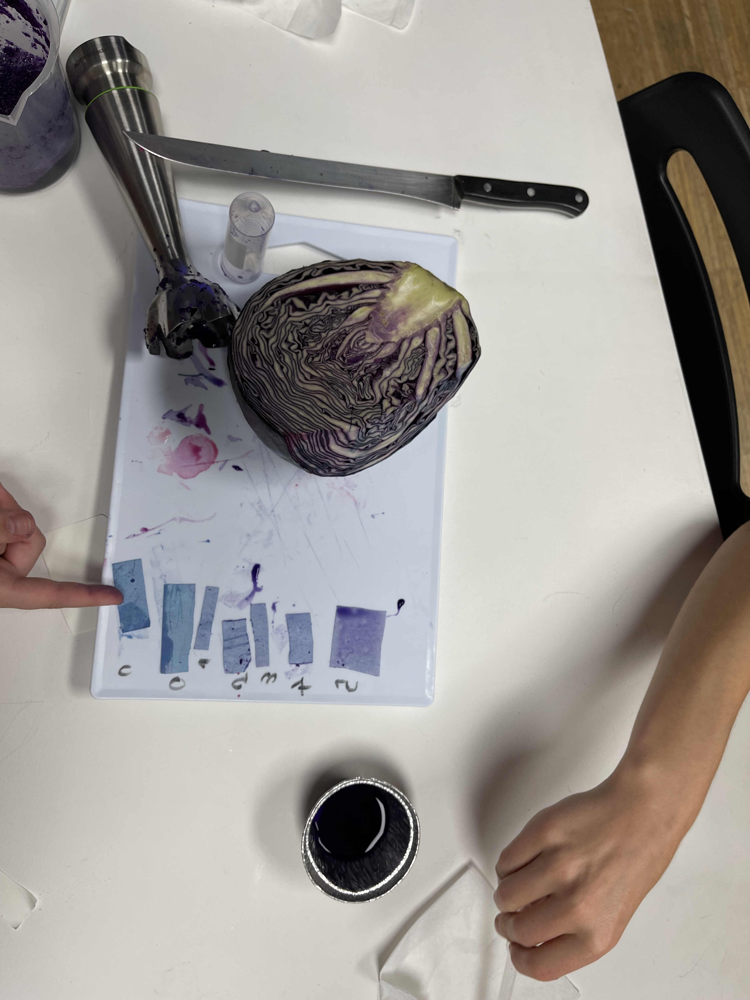

Bio & Agro Zero¶
No longer afraid of the complexity of using git commits to update a blog, we dove head first into the intricate fractals of life.
As a sample of what we did in the course, here are two almost scientific explorations we engaged in:
bioplastics¶
The remains of dinosaurs, fern and other long-dead lifeforms aren’t the only ones that can be transformed into a variety of useful or pleasant materials. The newly dead can be used for that as well. Our group started out with a lovely Agar-Apple collab. I leave the recipe as an exercise to the reader. The exercise definitely motivated me to try being very precise next time I do an experiment like that (once I have a purpose in mind).
 The apple-agar collab
The apple-agar collab
 A newly dead lifeform getting cut in order to produce a yet-to-be-determined materia
A newly dead lifeform getting cut in order to produce a yet-to-be-determined materia
diy pH paper¶
Another exloration we did was trying to make DIY pH paper, with red cabbage.
 The symbiosis of (wo)man and machine creating the paper
The symbiosis of (wo)man and machine creating the paper
 The most scientific picture I got out of the whole affair (an attempt at determining which pH level is correlated with which colour of our diy pH paper.. 0a) lemon juice: pink, 0b) bleach: yellowish white with green halo, 4) vinegar: pink-ish, 5) lemon second attempt: very pink, 2) bicarbonate, 8) nothing) …the methodology needs work before it is ready to be peer-reviewed.
evaluating a news article¶
We were asked to comment on a news article about a topic somehow related to the Bio/Agro Zero course. On a dark autumn night, I read this one.
Is a university blog post a news article? In our world of democratised access to the means of publishing, I’d argue that it counts. But that’s a matter to be discussed somewhere else. Mostly, it served as an excuse for me to explore the issue of small-scale farming, which I was already interested in but which the Bio/Agro Zero course also made more salient. I’m especially interested in sustainability and the question of which kind of agriculture maximises calories/nutriment per hectare.
The article summarizes claims made by a scientist who took part in the IPCC, Jack Heinemann. The core claims are that small-scale farmers (who are mostly women) feed 80% of the world’s population, that they do so by growing different crops together and that they thereby avoid many of the carbon-intensive inputs required for industrial monocultures while maintaining a level of (social/economic) autonomy.
I am enclined to believe all of these claims, because they suit my intuitive and ideological impulses. All the more reason to assess them critically (besides it being the assigned task).
To start out, let us take a look at an article co-written by the subject of the news article himself. It makes an interesting distinction between different approaches to building food security and fighting hunger. The authors consider herbicide resistant GM crops to be an example of a top-down approach, which ultimately centralises power and stunts technological development (because of its ‘black box’ nature) and contras this with agro-ecology, which they take to be a ‘bottom-up’ approach which favours technological development that serves people who need it the most. While it seems clear that some GM crops could be designed in a way which is adapted to such needs as well, the example serves to highlight questions that should always be asked when we assessthe use of a technology: for what purpose is it deployed, and what is its impact on power dynamics.
The latter is not just important as a political question, it can also serve as a kind of error theory, explaining why maladaptation and suboptimal distributions of resources occur despite seemingly obvious drawbacks and the urgency of global warming. Many people may assume that industrial agriculture is the most efficient way to feed the world. But if we take into account its ‘externalities’ and the growing need of maximising calories/nutrition per unit of land (due to population growth, the need to producein close proximity or inside of cities, and the need to make space for carbon-capturing ecosystems), the picture may look very different.
…Much remains to be assessed, starting with the core claims mentioned at the beginning, and perhaps continuing with an exploration of the advantages and drawbacks of methods such as permaculture, agroecology, and other techniques suited to and used by small scale agriculturalists. Perhaps this article could be a starting point. Following that, it would be interesting to explore what makes small-scale small scale. A collection of small scale production sites (even geographically adjacent) is large scale in a certain sense, but may not necessarily have the same drawbacks as current industrial farming techniques. This relates to social modes of organisation involving ‘fractal’ or federated scaling in ways that may be interesting.
However, it is Sunday at 23:45 and I will have to continue these musings some other time.